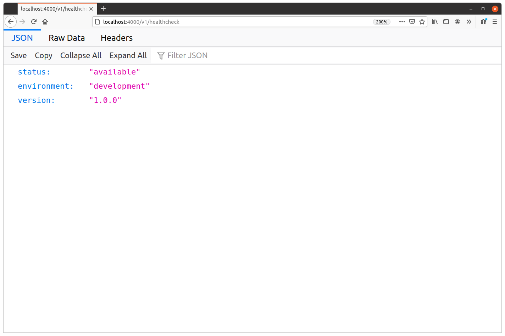
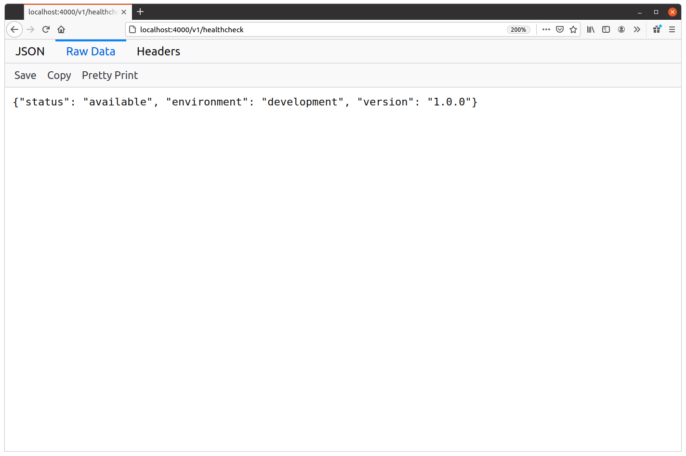
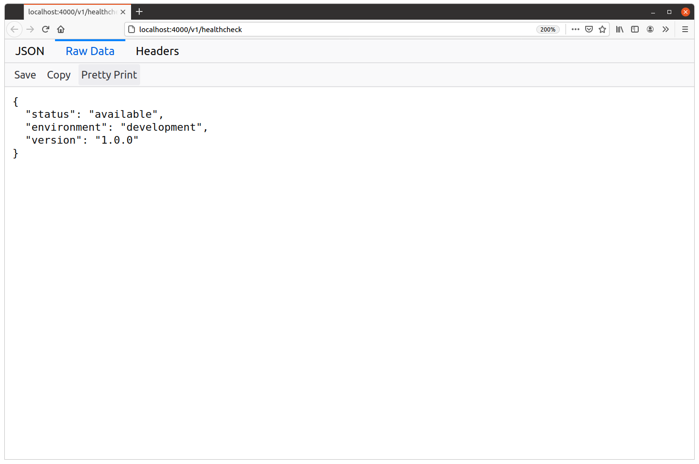

JSON با فرمت ثابت
بیایید با بهروزرسانی healthcheckHandler شروع کنیم تا یک پاسخ JSON معتبر و خوشساخت شبیه این ارسال کند:
{"status": "available", "environment": "development", "version": "1.0.0"}
در این مرحله، چیزی که میخواهم روی آن تاکید کنم این است که JSON فقط متن است. درست است که کاراکترهای کنترلی خاصی دارد که به متن ساختار و معنا میدهند، اما در اصل فقط متن است.
یعنی میتوانید یک پاسخ JSON را از handlerهای Go خود درست مثل هر پاسخ متنی دیگری بنویسید: با استفاده از w.Write()، io.WriteString() یا یکی از functionهای fmt.Fprint.
در واقع، تنها کار ویژهای که باید انجام دهیم این است که header مربوط به Content-Type: application/json را روی پاسخ تنظیم کنیم تا کلاینت بداند JSON دریافت میکند و بتواند آن را مطابق همین تفسیر کند.
بیایید دقیقا همین کار را انجام دهیم.
فایل cmd/api/healthcheck.go را باز کنید و healthcheckHandler را به شکل زیر بهروزرسانی کنید:
package main import ( "fmt" "net/http" ) func (app *application) healthcheckHandler(w http.ResponseWriter, r *http.Request) { // Create a fixed-format JSON response from a string. Notice how we're using a raw // string literal (enclosed with backticks) so that we can include double quote // characters in the JSON without needing to escape them? We also use the %q verb to // wrap the interpolated values in double quotes. js := `{"status": "available", "environment": %q, "version": %q}` js = fmt.Sprintf(js, app.config.env, version) // Set the "Content-Type: application/json" header on the response. If you forget to do // this, Go will default to sending a "Content-Type: text/plain; charset=utf-8" // header instead. w.Header().Set("Content-Type", "application/json") // Write the JSON as the HTTP response body. w.Write([]byte(js)) }
بعد از اعمال این تغییرات، API را دوباره راهاندازی کنید، یک ترمینال دوم باز کنید و با curl یک درخواست به endpoint مربوط به GET /v1/healthcheck بفرستید. حالا باید پاسخی شبیه این دریافت کنید:
$ curl -i localhost:4000/v1/healthcheck
HTTP/1.1 200 OK
Content-Type: application/json
Date: Tue, 06 Apr 2021 08:38:12 GMT
Content-Length: 73
{"status": "available", "environment": "development", "version": "1.0.0"}
همچنین شاید بخواهید آدرس localhost:4000/v1/healthcheck را در مرورگر خود باز کنید.
اگر یکی از نسخههای جدیدتر Firefox را اجرا میکنید، میبینید که به خاطر header مربوط به Content-Type تشخیص میدهد پاسخ شامل JSON است و آن را با JSON viewer داخلی نمایش میدهد. مثل این:

اگر روی tab مربوط به Raw Data کلیک کنید، باید پاسخ JSON اصلی و formatنشده را ببینید:

یا حتی میتوانید گزینه Pretty Print را انتخاب کنید تا whitespace اضافه شود، مثل این:

البته استفاده از یک string با فرمت ثابت، مثل کاری که در این فصل انجام میدهیم، رویکردی بسیار ساده و ابتدایی برای تولید پاسخ JSON است. اما خوب است به یاد داشته باشیم که این روش یک گزینه معتبر است. این روش میتواند برای endpointهایی مفید باشد که همیشه همان JSON ثابت را برمیگردانند، یا به عنوان راهی سریع و آسان برای تولید پاسخهای dynamic کوچک مثل همین موردی که اینجا داریم.
اطلاعات تکمیلی
charset در JSON
در مسیر برنامهنویسی خود ممکن است با APIهای JSON دیگری روبهرو شده باشید که پاسخها را با header مربوط به Content-Type: application/json; charset=utf-8 ارسال میکنند.
اضافه کردن پارامتر charset به این شکل معمولا لازم نیست. RFC مربوط به JSON میگوید:
JSON text exchanged between systems that are not part of a closed ecosystem MUST be encoded using UTF-8.
کلمه مهم اینجا «MUST» است. چون API ما یک برنامه عمومی و در معرض کاربران خواهد بود، یعنی پاسخهای JSON ما باید همیشه با UTF-8 encode شوند. همچنین یعنی کلاینت میتواند با خیال راحت فرض کند پاسخهایی که دریافت میکند همیشه UTF-8 encoded هستند. به همین دلیل، اضافه کردن پارامتر charset=utf-8 زائد است.
این RFC همچنین صراحتا اشاره میکند که media type مربوط به application/json پارامتر charset تعریفشدهای ندارد، یعنی از نظر فنی اضافه کردن آن هم نادرست است.
در واقع، در برنامه ما پارامتر charset هیچ هدفی را دنبال نمیکند و امن و البته درست است که آن را در header مربوط به Content-Type: application/json قرار ندهیم.